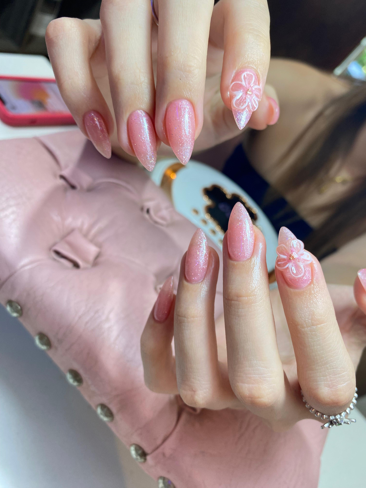
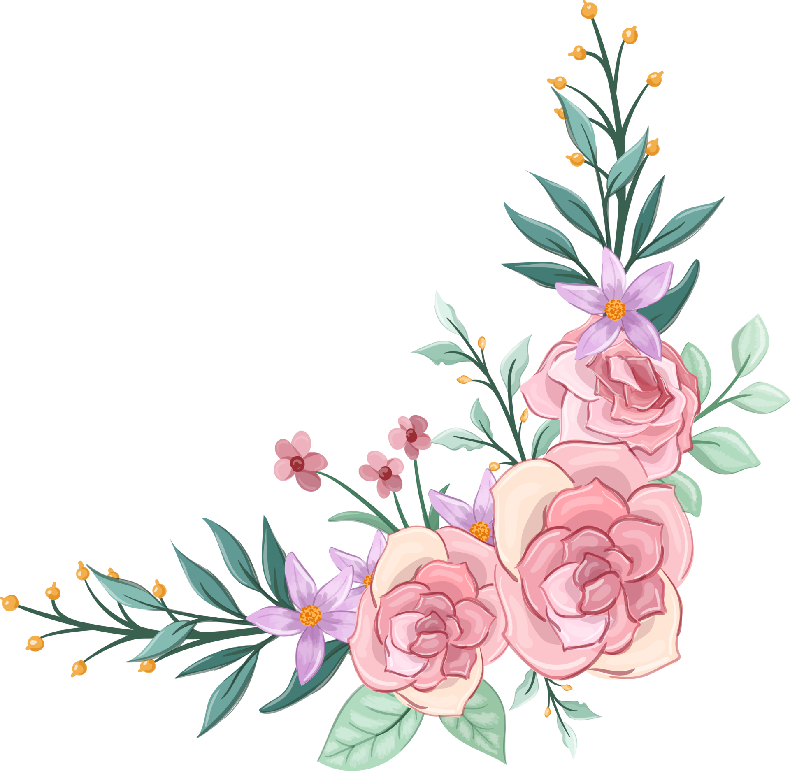

🌸 Crear este diseño floral me ha recordado porque amo tanto el nail art
Todo comenzó cuando mi clienta llegó buscando algo elegante pero con un aire de
fantasía y delicadeza. Juntas conversamos sobre la magia que puede transmitir el
color rosa y cómo un pequeño toque floral puede transformar por completo el look de las manos.
Trabajé con una base rosa translúcida y un ligero shimmer que da ese efecto de brillo sutil,
perfecto para quienes aman el glamour discreto. El detalle estrella fueron las flores en 3D,
cuidadosamente modeladas en los dedos anulares.
Mientras avanzaba con el diseño, notaba la emoción de mi clienta!!!
Ver cómo cada capa de esmalte y cada detalle floral cobraban vida. Al finalizar,
no pudo evitar sonreír y admirar sus uñas desde distintos ángulos. Me contó que este
diseño le hacía sentir más femenina, delicada y segura de sí misma. Sin duda,
para ambas fue una experiencia mágica y memorable, donde el color rosa y las flores se
convirtieron en los protagonistas de un look lleno de encanto y sofisticación.
